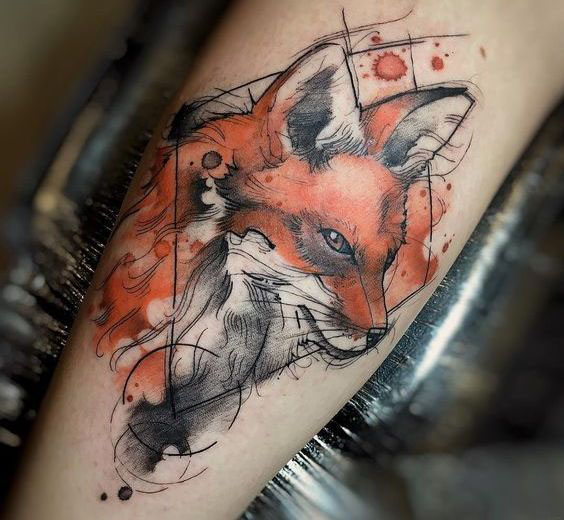

| Имя до превращения | Катарина фон Вельбург |
|---|---|
| Имя после превращения | Руби Шац |
| Сир | Патрик Шац |
| Знакомство с сиром | Немного одичавший Патрик Шац жил в лесу недалеко от поместия семьи Вельбург. Во время охотничего сезона ночью попал в капкан. Отец Катарины спас получеловека полумедведя от смерти, и Патрик стал должником этой семьи. |
| История превращения | Родилась в 1934 году. Родители любили природу и поселились рядом с небольшой деревушкой, которая стояла у леса. Катарина с детства любила играть в лесу с различными животными. Особенно близки по духу ей были лисы. В 16 лет потеряла родителей. Их корабль затонул когда они отправились в другую страну по делам семейного бизнеса. Опекуном девочки стал противный и алчный дядя. Девочка подозревала, что дядя хочет получить ее наследство, устранив при этом племянницу. Так и случилось. За день до 18ти-летия дядя пригласил девочку на вечернюю прогулку, но вместо дяди в лесу ее ждали разбойники. Уже умирая она увидела как на разбойников напало какое-то существо. В итоге вампир(мы то это знаем) провел процесс перевоплощения и понес тело в поместье, в котором, по "счастливой случаности", сидел господин который должен был зафиксировать смерть племянницы и передать наследство дяде. Но не тут то было. После смерти родителей Катарине пришло письмо, в котором отец наказал составить завещание, в котором упоминалось что все(бизнес, поместье и имущество) переходят Патрику Щацу. Так она и сделала. Так после "смерти" Катарины фон Вельбур, в поместье обосновалась семья Шац. "Отец Патрик Шац и дочь Руби Шац". |
| Дата перевоплощения | 1950 год (Возраст: почти 18 лет) |
| Занятость | Семейный бизнес? |
| Внешность Руби |
Рост: 157см; Глаза: Изумрудные; Волосы: Золотисто-русые, после перевоплощения появилась одна огненно-рыжая прядь справой стороны; На левой голени тату лисы. Сделала в 16 лет после смерти родителей, чтобы чувствовать себя менее одинокой.  |